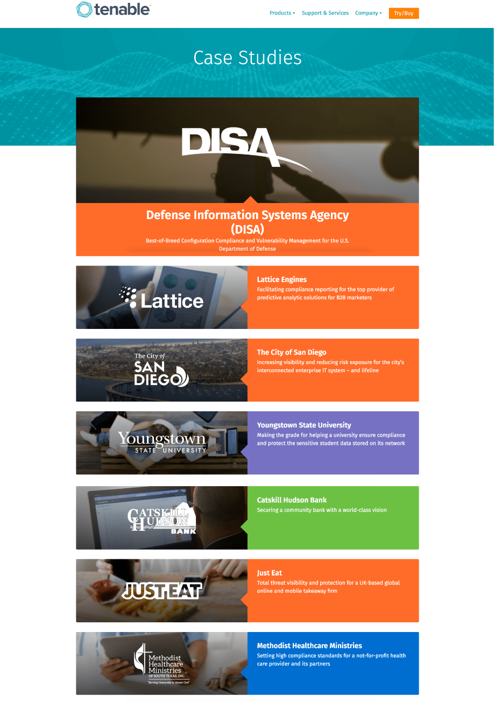
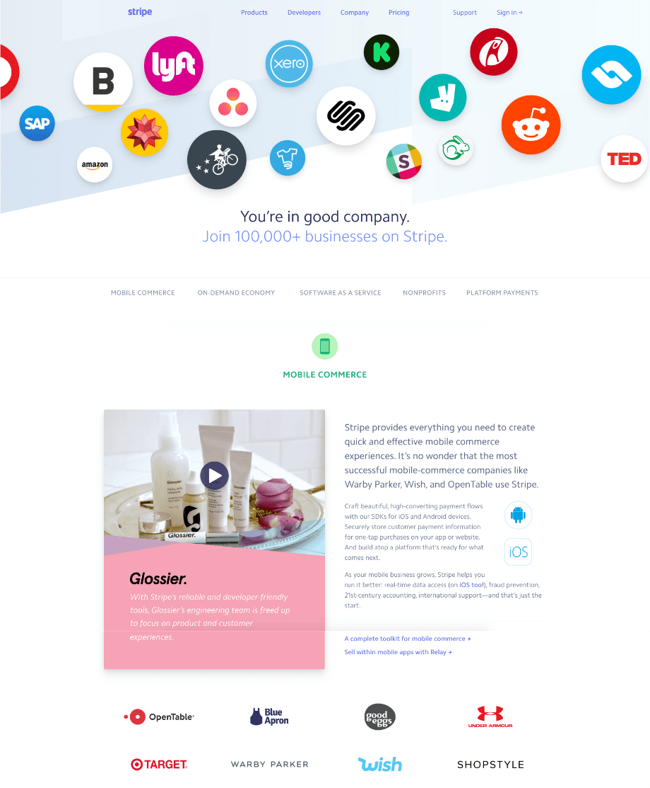
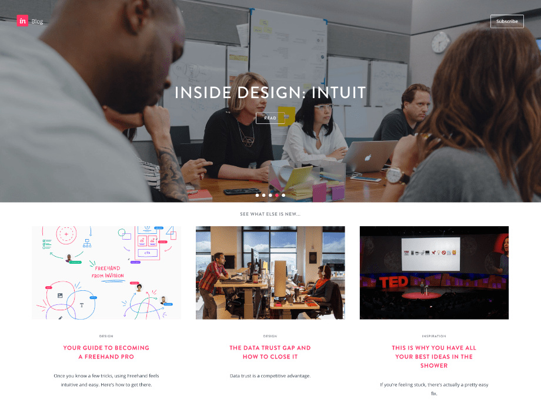
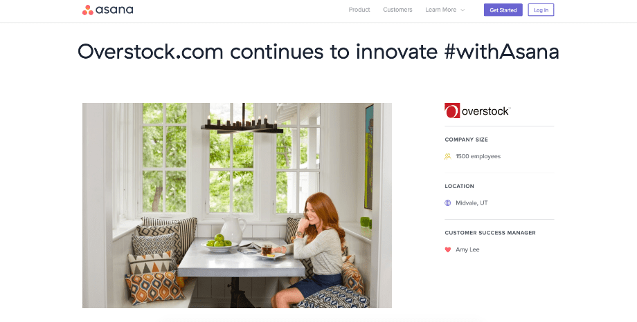
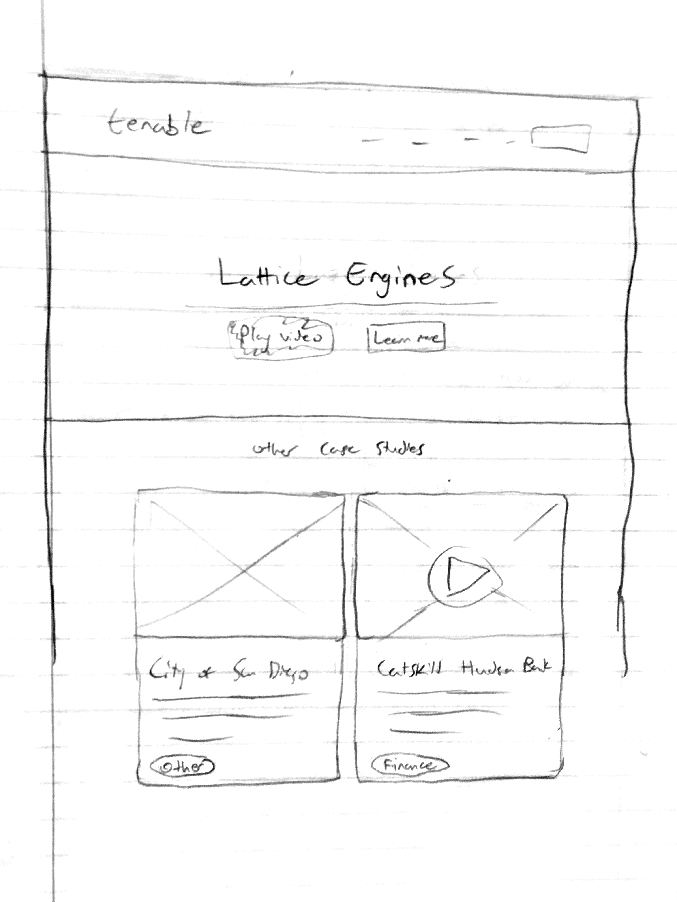
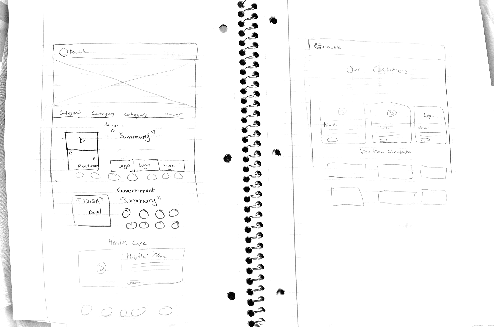
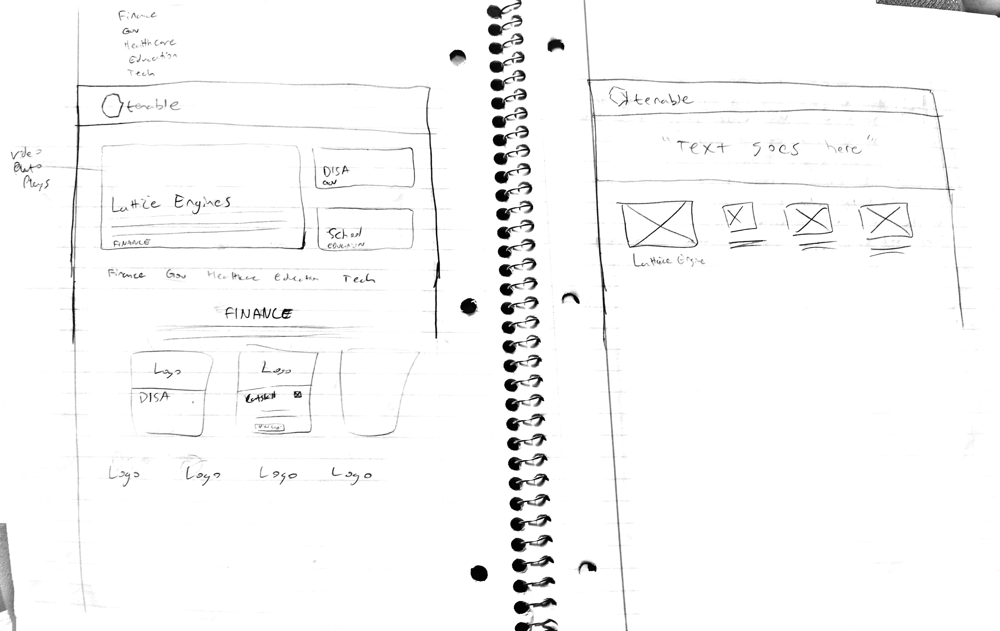
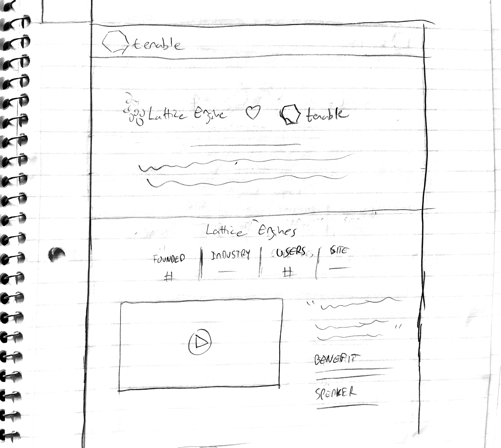
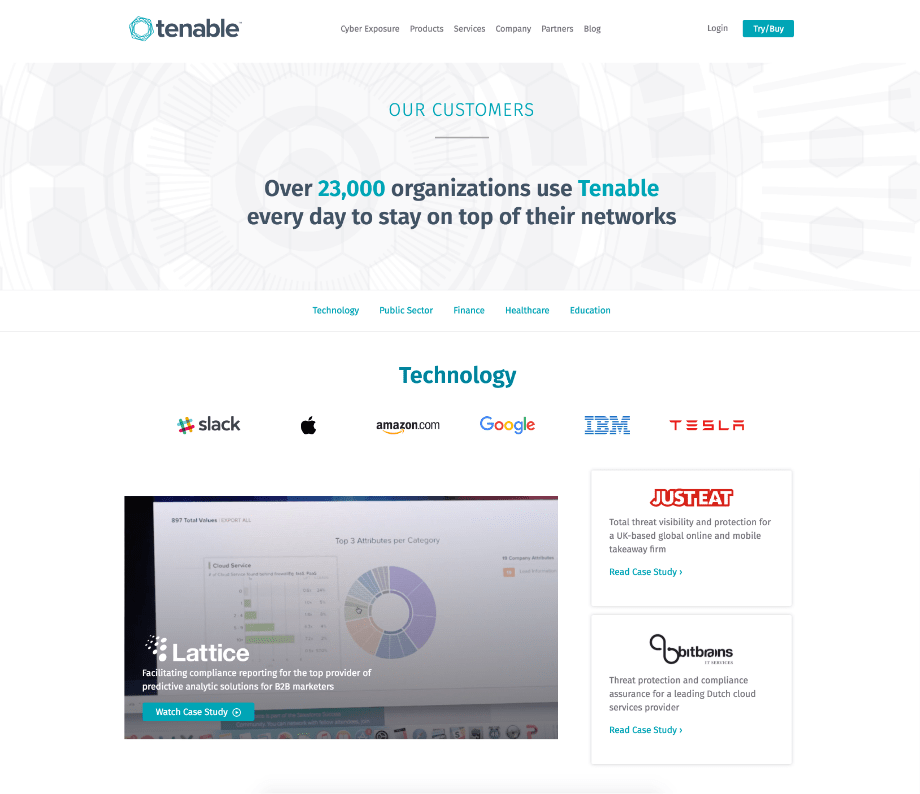
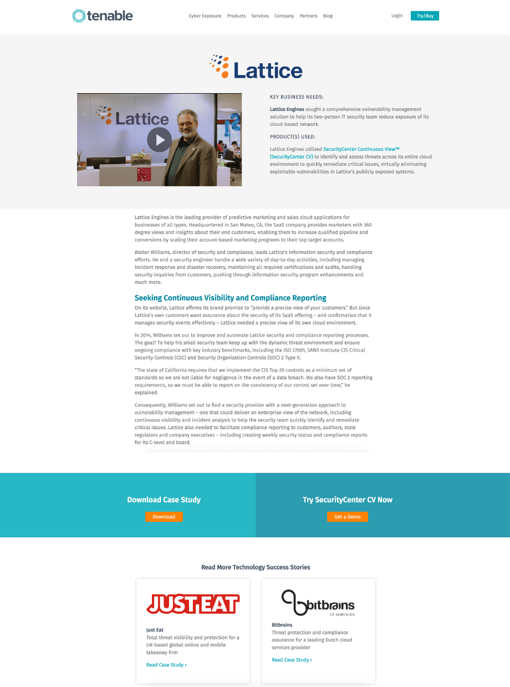

For one of my projects, I worked closely with Noha, the web-dev intern on our team. We were tasked to redesign the company's case studies page to drive more traffic and increase customer leads. During our process, we changed the scope of this page to include more than just case studies; we displayed out a number of the company's clients as well.
SCOPE
UI, UX, branding, copywriting, front-end development.
CHALLENGE
Redesign parts of Tenable's corporate website to better communicate its current impact on clients and potential value for future businesses.
SOLUTION
A fresh customers page that includes case studies and reflects tenable's new rebrand.
RESULTS
72% increase in page views and 175% increase in the time spent on the page, within the first 30 days.
Goals For Redesign
- Create new webpage that aesthetically matches the company's corporate homepage.
- Give users a general overview of Tenable's customers.
- Entice viewers to read through whole case study.
- Increase sessions of video case studies.
- Spark interest to readers so they try the products.
Original Design - Case Study Homepage
Original design of the case study's homepage
Problems With ↑ This Design
- No clear way of indicating how a case study relates to the reader.
- No organized categorization of case studies.
- A lot of the variations of color are very harsh and overpowering.
Original Design - Case Study Interior Page

Original design of the case study's interior page
Problems With ↑ This Design
We used a conversion optimization software to gather data on this part of the site. We found that there was an exit percentage of 21%, the bounce rate was 42%, and people only viewed the top 3 case studies. We wanted to decrease the two percentages and allure the reader to read more case studies.
So the problems for this interior page were:
- No quick introductory text.
- Nothing to intro the video.
- Video sessions were too low.
- Too much text, which overwhelmed the reader.
- "Get Demo" call to action didn't sit right with "Learn how".
Moving Forward
After going over the goals of this redesign and analyzing all of the data and problems from the original site, we decided that we would need to create a page that contained more than just case studies. We decided to design a Customers page that included the company’s well-known clients as well as the case studies we originally had. So in the end, we would still have 2 pages: the customers homepage and the interior page of each case study.
Customer's Homepage Inspiration
We browsed a lot of websites for inspiration before we started sketching out ideas. Two companies stood out to us in particular because their designs contained elements that aligned with possible solutions to problems we had with our original designs. These companies were Stripe and InVision.
Stripe
Screenshot of Stripe's customers page
- Stripe did a really nice job of displaying out their customers by having their logos flow into the viewport while also asserting their validation as a service to potential customers with their headliner text.
- We really liked how they categorized their customers and divided the page out according to the categories. This would allow the reader to easily browse through the page and see how the company's products can help their organization.
- Having the logos at the bottom of each industry's section was a nice touch on reinforcing who their customers were.
InVision
Screenshot of InVision's blog page
- We really liked how InVision had the featured stories on their blog displayed at the top hero section of the page in a carousel view. This put strong emphasis on those featured stories and would surely prompt the reader to click through them.
- We also enjoyed seeing the other stories in a grid view, with cover photos, and filtering tags. We thought this made things look more organized and easier on the eye.
Customer's Interior Page Inspiration
We looked to Asana's customer's stories pages for inspiration.
Asana
Screenshot of Asana's customer's page
- Asana did a great job of keeping the focus on the content by providing a lot of white space.
- They also kept the vertical space to a minimum by putting the general information of the customer to the right of the image. We thought they complimented each other nicely.
Constraints
We could not alter any of the text within each of the case studies. This was because we had already signed a contract with the customer for the content; any further changes to this would need additional signing. This was just too time consuming.
We also had to limit our use of photography in the new design. This was because we would need to send someone to the customer’s office to capture photos. This just wasn’t in the budget at the time.
Wireframe Sketches
We started sketching out a lot of possible ideas for the layouts of both the home and interior pages. We went through many critiques and our managers gave us valuable feedback.
   Final Hi-Fi Mockups
After many iterations and constant feedback, we finalized on our design!
Customer's homepage
Final design for customer's homepage
Customer's interior page
Final design for customer's interior page
Key Takeaways
This project was super fun to take on. Quickly into this project, I realized how important it was to ask my manager for help whenever needed and to always ask for feedback, especially during the early stages. Working closely with our web-dev intern pushed me to communicate my thoughts better; to translate design language to dev language more effectively. I also learned how to utilize data to better inform decision making.
This redesign resulted in a 72% increase in page views and 175% increase in the time spent on the page, within the first 30 days.